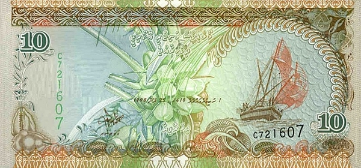

____
Валюта
Валюта в Мальдивах - Мальдивская руфия.
Курс: 1 Мальдивская руфия - 4,74 рублей (7 февраля 2021).
Появился Мальдивская руфия в 1951 году. Находятся банкноты номиналом 5, 10, 20, 50, 100, 500 и 1000 руфий, а также монеты — 1, 2, 5, 10, 25 и 50 лари, 1 и 2 руфии.

История
На территории страны долгое время не существовало собственной валюты, и первые деньги были привезены из соседних островных государств, а также из Индии. Первая собственная валюта была крайне низко защищена, и повальная диверсификация создала невыгодные экономические тарифы внутри государства. Разработанная система защиты (водные знаки и перфорация) сделали валюту страны уважаемой и почитаемой. Руфии используются только внутри страны и не имеют хождения в других государствах мира. Деньги печатаются на бумаге, которая закупается Америкой для производства долларов, кроме того в производстве используется широкий спектр красок, который позволяет визуально характеризировать руфии. Единственным минусом денег является то, что сами банкноты очень маленькие по размеру. История денег на Мальдивах коротка и однозначна, сами банкноты не имеют особенностей, разительно отличающих в разные годы становления страны. Страна является официальной зоной высокого экономического статуса, поэтому в банках можно обменять любые купюры любого достоинства. Несмотря на удаленность от «большой земли», на Мальдивах отлично развиты коммуникации, Интернет и телефония, в том числе и сотовая.
Также обмен валюты можно производить в аэропортах и обменниках. На территории Мальдив в свободном обращении принимаются доллары и евро, но в отдаленных местностях только руфии. Кредитные карты тоже в почете, особенно в Мале, поэтому особенно стараться с обменом валют не стоит. Вообще в стране сильно развит туризм, поэтому созданы все условия для комфортного денежного обращения. Чеки и карты никого не удивят, всюду работают банки и кредитные организации, такси, магазины и рестораны, где также можно рассчитываться по безналичному расчету.
Ввоз и вывоз местной валюты из страны запрещён.
____